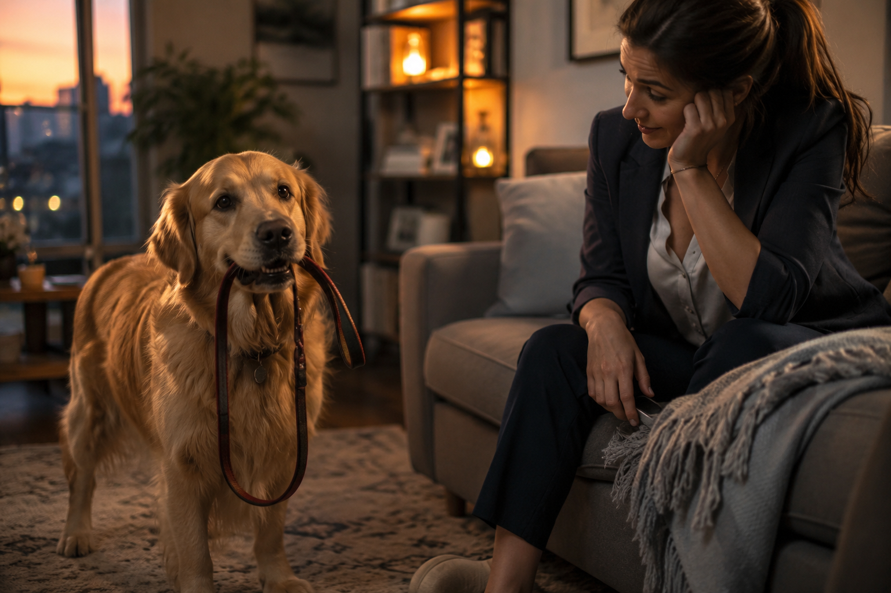
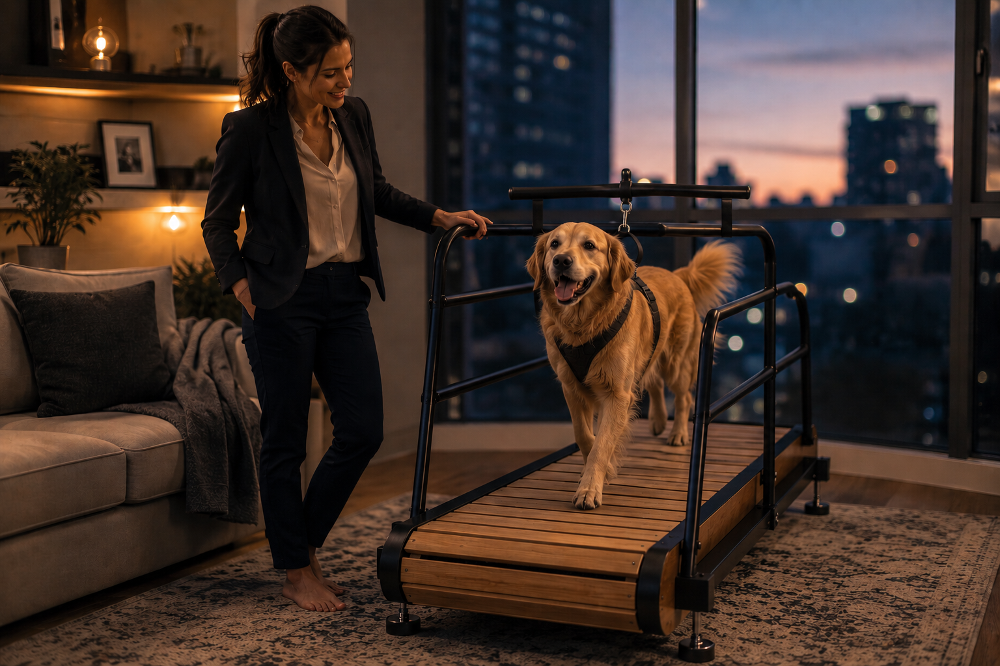

You work full-time, you come home wrecked, and the walk you can actually give tonight is nowhere near what your dog needs. Then they give you that look — the "let's go out and play" gaze — five minutes after you've already done your best. That guilt isn't a character flaw. It's a math problem. And there's a simple fix sitting in a box the size of a suitcase.

A short, rushed walk isn't nothing — but it's rarely enough to actually burn off what a healthy dog is carrying around by 6pm. What's left over doesn't just disappear. It turns into pacing, chewing, barking at nothing, or that restless circling that means "I have energy and nowhere to put it."
An indoor treadmill doesn't replace real walks or the sniffing and exploring your dog genuinely needs. What it does is fix the math — it gives you a reliable way to add real, structured exercise on the nights a walk just isn't going to cut it, without needing daylight, decent weather, or the last ounce of energy you have left after work.
The version worth paying attention to isn't motorized. There's no motor setting the pace and no motor to feed electricity into, month after month. The belt only moves because your dog is moving it — which means the speed is always exactly whatever your dog decides it should be, whether that's a senior's careful stroll or a young dog's full sprint.
It's 6:40pm. You're still in your work clothes. Your dog is standing by the door, then by you, then by the door again — not settling, not really asking, just waiting. You know a ten-minute walk around the block isn't going to fix tonight. That gap, between what you have left and what your dog actually needs, is exactly what this closes.

Not a gimmick that collects dust. A plug-in fix for the exact math you've been losing most weeknights.
Rain, ice, 9pm darkness, a heat advisory — none of it matters anymore. Your dog gets a real session indoors, on your schedule, without either of you needing to brave the weather or the dark.
This is the difference most owners notice first: exercise stops being conditional. It happens because you decided it should, not because the weather cooperated.
No motor means nothing is ever pulling your dog faster than they want to go. The belt only turns because their own paws are turning it, so a cautious puppy, a mid-life athlete, and a slower senior can all use the exact same machine safely, each at their own speed.
A motorized belt sets the pace and the dog has to keep up or fall behind. Here, the dog is always in control — they can slow down, speed up, or stop the moment they've had enough.
Nothing to plug in, nothing pulling electricity every time your dog uses it, and nothing that can short out or burn through a motor over years of daily use. It's a one-time purchase that costs exactly $0 more to run tonight, next year, or five years from now.
Because there's no motor, your dog can stop or step off at any moment — there's nothing to override, nothing to fight against, and no risk of a machine dragging them if they trip. Side rails, a sturdy steel frame, and a non-slip belt keep everything steady while your dog is the one deciding when the session's over.
Always supervise while your dog is on the treadmill, and let them set their own pace rather than coaxing them faster than they're comfortable going.
Same as most things in a dog's life — it comes down to temperament.
High-drive, high-energy dogs that a short walk barely dents. This is close to essential, not a nice-to-have.
Independent enough to get bored fast and invent their own entertainment. A treadmill gives that energy somewhere useful to go.
Usually content with modest daily activity. Still handy on off days — and since there's no motor pushing the pace, it's gentle enough for older Calm-type dogs too.
A moving machine can be genuinely unsettling at first. Worth it only with slow, patient introduction — never forced.
A treadmill doesn't replace real walks, outdoor sniffing, or time with you — dogs need all of that mentally, not just physically. What it does is give you a dependable backup for the evenings when real life gets in the way of a real walk. It closes the gap. It doesn't erase the rest of the job.
If you already know your dog runs Wild or Aloof, this stops being optional pretty quickly. If they run Calm or Shy, it's still worth having on hand — just introduced slowly, and used less often.
Specs, current pricing, and real owner reviews — everything worth checking before you decide if this is the right fit for your dog's energy level.
Check It Out Here →Disclosure: As an Amazon Associate, PuppyMatch Pro earns from qualifying purchases. The link above is an Amazon affiliate link, and we may be compensated if you make a purchase through it — at no additional cost to you. A treadmill is not a substitute for real walks, outdoor time, or your dog's individual needs, and any dog with joint, heart, or mobility concerns should be cleared by a vet before starting a new exercise routine — even a self-paced, non-motorized one. Introduce any dog to a treadmill slowly and never leave them unattended on it.